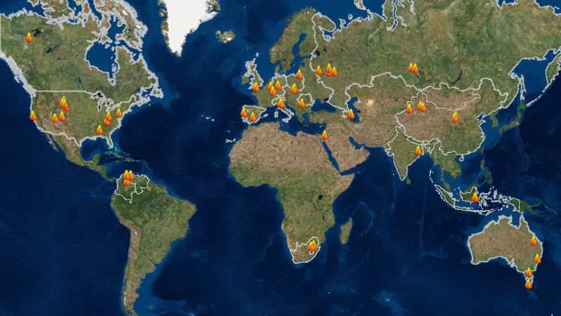

Global distribution of coal and peat fires
An Interactive World Map of Coal and Peat Fires by
Rudiger Gens
, made to accompany
Coal and Peat Fires: A Global Perspective
, Edited by Glenn B. Stracher, Anupma Prakash, and Ellina V. Sokol

Explore interactive map - Zoom:
World
Africa
Asia
Australia
Europe
North America
South America